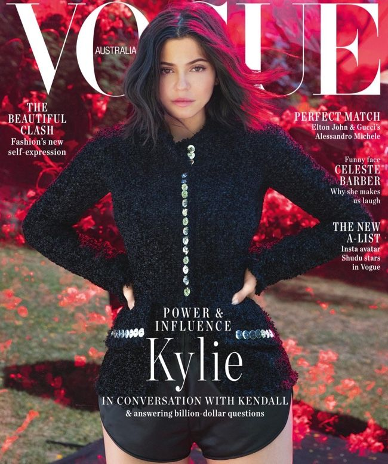
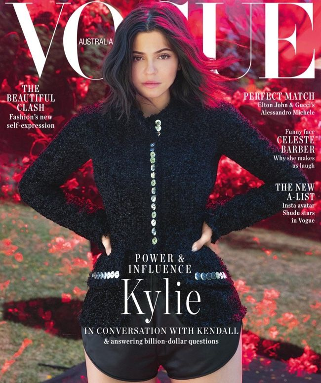
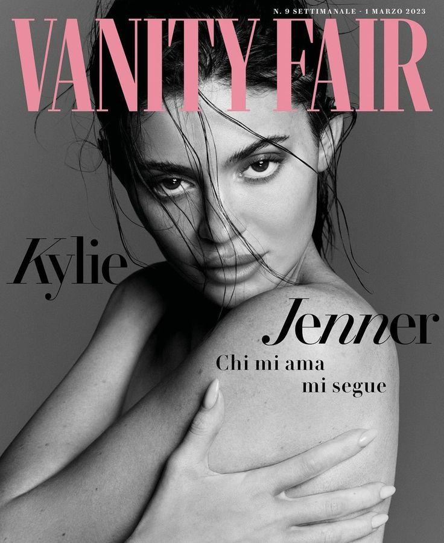

The Bordeaux-coloured dress was made of impressively tailored, body-hugging chainmail that clung to the beauty entrepreneur’s every curve.
(Versace also pulled out some impeccable chainmail work, dressing both America Ferrera and Margot Robbie in the finicky metal.)
As if the shimmering metallic fabric wasn’t enough sparkle, the plunging sweetheart neckline, straps, hem and empire waist were all lined in rows of red rhinestones.
But one area where Jenner opted to be a little more conservative was the dress’s opacity. Unlike the sheer iteration that appeared on the runway, hers seemed much more solid, leaving the sheer looks to the rest of the attendees.
 
